，只取决于当前状态 s 。马尔可夫过程是一种无记忆的随机过程；也就是说，它是一个具有马尔可夫性质的随机状态序列。这是一个为决策过程建模的框架。马尔可夫决策过程 ( MDP )指定了一种数学结构来寻找RL问题的解决方案。
，只取决于当前状态 s 。马尔可夫过程是一种无记忆的随机过程；也就是说，它是一个具有马尔可夫性质的随机状态序列。这是一个为决策过程建模的框架。马尔可夫决策过程 ( MDP )指定了一种数学结构来寻找RL问题的解决方案。强化学习 ( RL )最近获得了相当大的牵引力。这是一种不同于传统机器学习和深度学习技术的机器智能方法。在学习围棋、Dota等复杂游戏方面已经达到了人类水平的表现。RL是一个人工智能框架，其中代理通过试错来执行学习。这是一个模仿人类基本学习方式的学习过程。本章的首要目标是让你熟悉RL的组成部分。您将学习如何使用r中的各种包来实现RL。
在本章中，我们将介绍以下配方:
RL是人工智能的通用框架。它用于解决顺序决策问题。在RL中，给计算机一个要实现的目标，它通过从与环境的交互中学习来学习如何实现这个目标。一个典型的RL设置由五个组件组成，分别称为代理、环境、动作、状态和奖励。
在RL中，代理使用一组动作 ( A )中的一个动作与环境进行交互。基于代理采取的动作，环境从初始状态转换到新状态，其中每个状态属于环境内的一组状态。这种转变从环境中产生一个反馈奖励信号(一个标量)。奖励是对代理表现的评估，奖励值取决于当前状态和执行的操作。这个过程是一个主体对行为和环境作出选择，对新的状态和与之相关的奖励作出响应，直到主体学习到一个最佳行为，从任何初始状态达到最终状态，使累积奖励最大化。
下图是RL设置的图示:
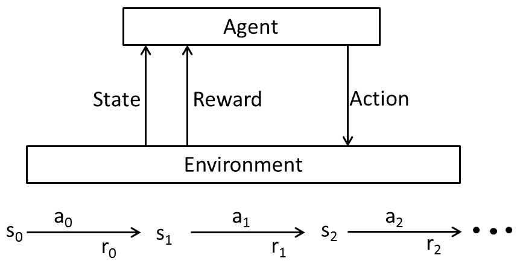
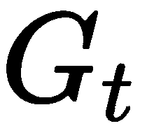可以表述如下:
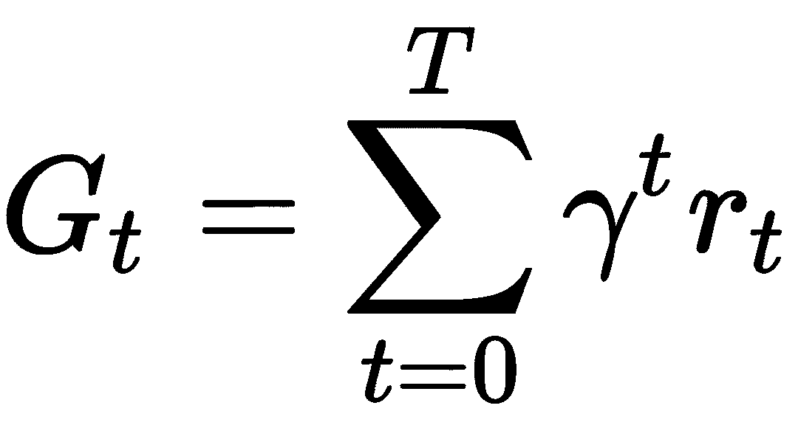
这里， G t 是累积奖励，
γ是折扣因子，
和 t 是时间步长
RL设置遵循特定的假设。首先，智能体顺序地与环境相互作用；那么，第二，时空是离散的；最后，转移遵循马尔可夫性质；也就是说，环境的未来状态，只取决于当前状态 s 。马尔可夫过程是一种无记忆的随机过程；也就是说，它是一个具有马尔可夫性质的随机状态序列。这是一个为决策过程建模的框架。马尔可夫决策过程 ( MDP )指定了一种数学结构来寻找RL问题的解决方案。
它是由五个部分组成的元组—(S，A，P，R，γ):
 后到达
后到达 的概率。
的概率。 ，使用动作
，使用动作 从
从 移动到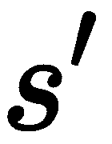时的期望奖励。
移动到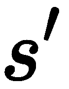时的期望奖励。使用MDP，我们可以找到一个策略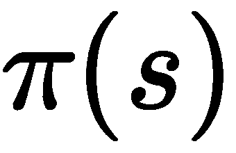，它用贴现因子 最大化预期长期回报
最大化预期长期回报 (它定义了未来回报的适用贴现)。策略定义了代理应该根据当前状态采取的最佳操作。它将动作映射到状态。从一个状态 s 开始，并遵循一个政策
(它定义了未来回报的适用贴现)。策略定义了代理应该根据当前状态采取的最佳操作。它将动作映射到状态。从一个状态 s 开始，并遵循一个政策 来估计代理的长期回报的函数被称为价值函数。
来估计代理的长期回报的函数被称为价值函数。
有两种类型的价值函数:
 的代理的期望收益:
的代理的期望收益:
 的期望收益:
的期望收益: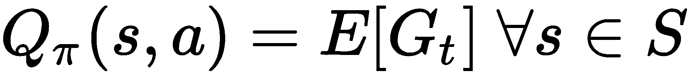
在所有可能的价值函数中，存在一个最优价值函数 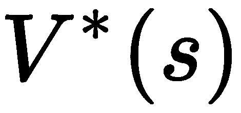，它对所有状态产生最高的期望回报。对应于最优值函数的策略被称为最优策略。
 和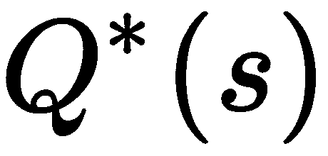可以表示如下:
和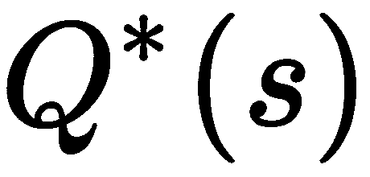可以表示如下:
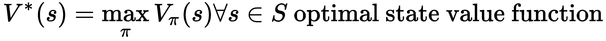
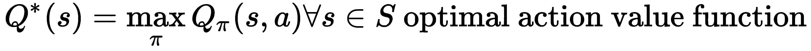
通过最大化超过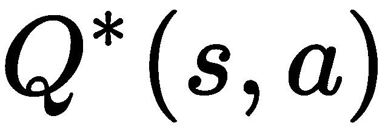可以找到最优策略。最佳策略可以描述如下:
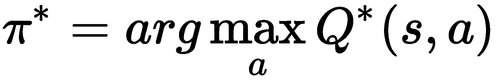
利用贝尔曼方程，我们可以找到最优值函数。贝尔曼期望方程将价值函数定义为从当前状态转移 s ，使用动作 a ，以及从下一个状态转移s’的期望回报的总和:
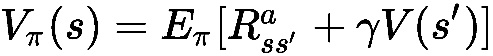
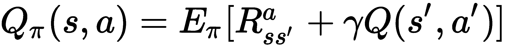
用于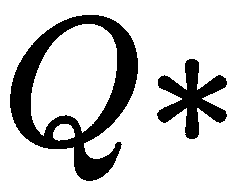和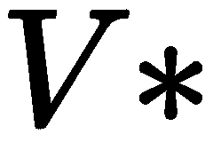的贝尔曼最优方程如下所示:
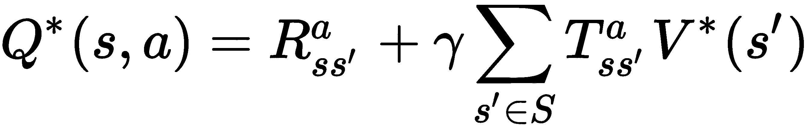
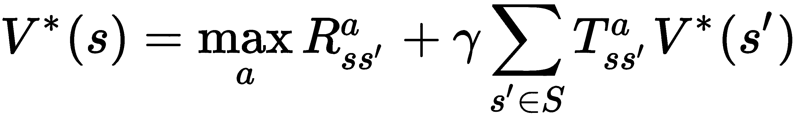
此外，最佳状态值和动作值函数通过贝尔曼最优方程递归关联，如下式所示:
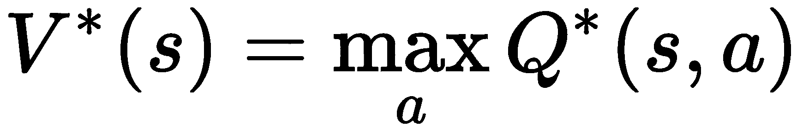
由此，我们得到以下结论:
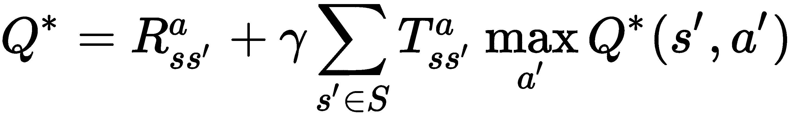
求解贝尔曼最优性方程有很多方法，比如值迭代、策略迭代、SARSA、Q-learning等。RL技术可以分为基于模型的方法和无模型的方法。基于模型的算法依赖于提供状态转移概率的环境的显式模型，以及MDP形式的环境表示。这些MDP可以用各种算法求解，比如值迭代，策略迭代。
另一方面，无模型算法不依赖于任何关于代表问题的环境的明确知识。相反，他们试图学习基于代理与环境的动态交互的最优策略。在这个菜谱中，我们将使用基于模型的策略迭代算法来解决RL问题。
在这个食谱中，我们将解决一个网格导航问题。下图是导航网格的图示。它代表一个导航矩阵，其中每个状态都被分配了一个标签。矩阵中的每个单元代表一种状态，总共有四种状态。代理应该从任意随机起始状态导航到最终目标状态，4。代理只能通过网格中的开口在状态之间移动，而不能离开网格壁。在每个状态下，代理可以执行可用动作集中的任何动作；也就是说，它们可以向上、向下、向左或向右移动。当进入目标状态时，代理人获得100的奖励，其他每增加一步都要付出-1的惩罚。
在下图中，可能的状态为{1，2，3，4}，可能的动作集为{上、下、左、右}:
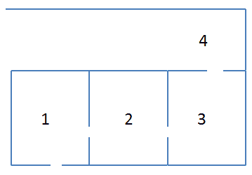
对于基于模型的RL实现，我们将使用MDPtoolbox库。
让我们导入MDPtoolbox库:
library(MDPtoolbox)
MDPtoolbox库包含许多与离散时间MDP解析相关的函数。
在准备就绪部分，我们定义了我们的RL问题。我们知道，要解决基于模型的RL问题，我们需要一个转移概率矩阵和一个回报矩阵:
# Up
up=matrix(c( 0.9, 0.1, 0, 0,
0.2, 0.7, 0.1, 0,
0, 0, 0.1, 0.9,
0, 0, 0, 1),
nrow=4,ncol=4,byrow=TRUE)
# Down
down=matrix(c(0.1, 0, 0, 0.9,
0, 0.8, 0.2, 0,
0, 0.2, 0.8, 0,
0, 0, 0.8, 0.2),
nrow=4,ncol=4,byrow=TRUE)
# Left
left=matrix(c(1, 0, 0, 0,
0.9, 0.1, 0, 0,
0, 0.8, 0.2, 0,
0, 0, 0, 1),
nrow=4,ncol=4,byrow=TRUE)
# Right
right=matrix(c(0.1, 0.9, 0, 0,
0.1, 0.2, 0.7, 0,
0, 0, 0.9, 0.1,
0, 0, 0, 1),
nrow=4,ncol=4,byrow=TRUE)
现在，让我们将所有操作放在一个列表中:
actions = list(up=up, down=down, left=left, right=right)
actions
以下屏幕截图显示了每个动作的状态动作矩阵:
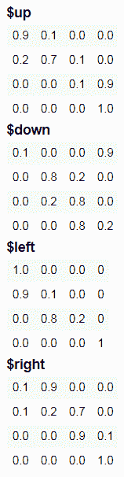
rewards=matrix(c( -1, -1, -1, -1,
-1, -1, -1, -1,
-1, -1, -1, -1,
100, 100, 100, 100),
nrow=4,ncol=4,byrow=TRUE)
rewards
以下截图显示了奖励矩阵:
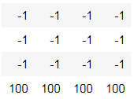
solved_MDP=mdp_policy_iteration(P=actions, R=rewards, discount = 0.2)
solved_MDP
以下截图显示了解决问题的结果:
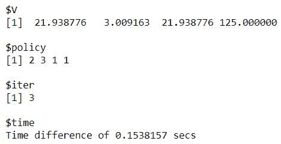
让我们来看看策略迭代算法给出的策略:
solved_MDP$policy
names(actions)[solved_MDP$policy]
以下截图显示了针对我们问题的策略:

上一个屏幕截图中描述的策略让我们在相应的状态1、2、3、4中采取最佳行动。例如，状态1的最佳行动是向下，状态2是向左，状态3是向上，状态4是向上。我们可以使用以下代码获得每一步的值:
solved_MDP$V
下面的屏幕截图显示了我们政策每一步的价值:
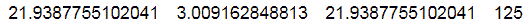
在这里，我们可以看到在最后一步，我们的策略的值是 125 。
在步骤 1 中，我们为每个动作定义了动作概率矩阵。我们可以将此解释为使用一个动作从当前状态转换到下一个状态的概率。假设代理处于状态 2 并试图向左走，代理有90%的概率会转换到状态1。
下图显示了左动作的转移概率矩阵:
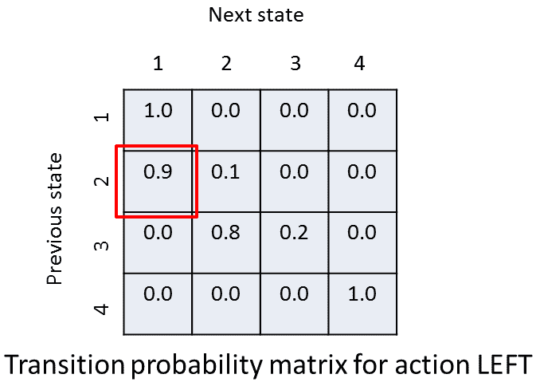
在步骤 2 中，我们定义了一个奖励矩阵；也就是说，从当前状态转换到下一个状态时给予代理的标量奖励。
下图显示了奖励矩阵:
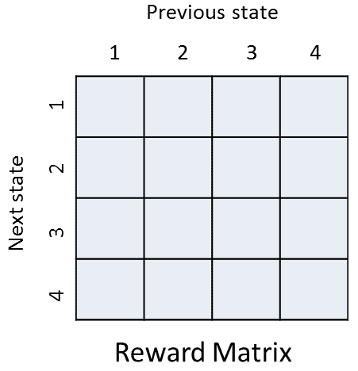
在最后一步中，我们通过使用策略迭代算法来求解贴现MDP来解决RL问题。mdp_policy_iteration()函数返回 V ，即最优值函数；政策，即最优政策；iter，为迭代次数；还有time，就是程序占用的CPU时间。当两个连续的策略相同时，策略迭代算法停止。我们还可以通过向max_iter参数传递一个值来指定迭代的次数。
MDPtoolbox包还提供了值迭代算法的实现，这样我们就可以求解一个MDP。下面的代码块演示了同样的情况:
mdp_value_iteration(P=actions, R=rewards, discount = 0.2)
以下屏幕截图显示了最佳策略的详细信息:
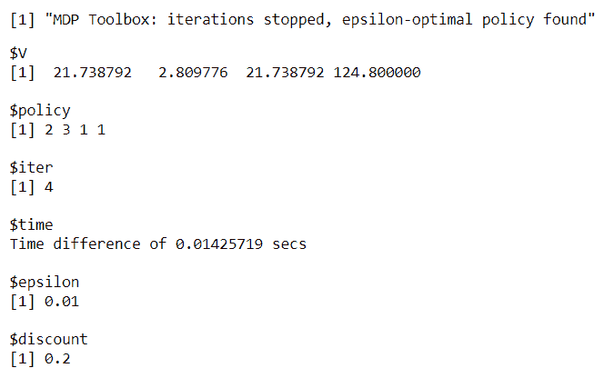
价值迭代法给出的最优策略是{2，3，1，1}。最后一步的值接近我们在策略迭代方法中得到的值。
在之前的配方中，使用MDPtoolbox 的基于模型的RL，我们遵循基于模型的方法来解决RL问题。随着状态和动作空间的增长，基于模型的方法变得不切实际。另一方面，无模型强化算法依赖于代理与代表当前问题的环境的试错交互。在这个配方中，我们将使用一种无模型的方法，通过r中的ReinforcementLearning包来实现RL。这个包利用了一种流行的无模型算法，称为 Q-learning 。它是一种非策略算法，因为它同时探索环境和利用当前知识。
Q-learning保证收敛到最优策略，但要实现这一点，它依赖于代理与其环境之间的持续交互，这使得它的计算量很大。这种算法期待下一个状态，并观察该状态下所有可能行动的最大可能回报。然后，它利用这一知识以特定的学习速率α更新当前状态中相应动作的动作值信息。该算法试图学习一个称为Q函数的最佳评估函数，该函数将每个状态和动作对映射到一个值。它表示为Q: S × A => V，其中V是在状态 中执行的动作
中执行的动作 的未来奖励值。
的未来奖励值。
下面是Q学习算法的伪代码:
 。
。 。
。 的表格条目:
的表格条目: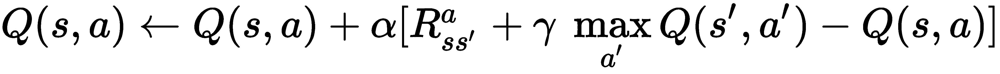
 。现在，
。现在， 变成当前状态，
变成当前状态， 。
。在这个配方中，我们将使用ReinforcementLearning 包，它执行无模型RL。
让我们导入ReinforcementLearning包:
library(ReinforcementLearning)
在这个菜谱中，我们将使用MDPtoolbox 处理上一节中使用的相同导航示例。在这种情况下，我们不会有任何预先确定的输入数据，我们将使用无模型方法来解决问题。代理将与代表问题的环境动态交互，并生成状态-动作转换元组。环境的结构特定于手头的问题。一个环境通常是一个随机的有限状态机，代表任何特定问题中的操作规则。它根据奖励和惩罚向代理提供关于其行为的反馈。
以下是某个环境的一些通用伪代码:
environment <- function(state, action) {
...
return(list("NextState" = newState,"Reward" = reward))
}
在下一节中，我们将创建一个导航网格环境，并训练一个代理使用无模型RL在网格中导航。
让我们以编程方式为我们的问题创建一个环境:
states <- c("1", "2", "3", "4")
actions <- c("up", "down", "left", "right")
cat("The states are:",states)
cat('\n')
cat("The actions are:",actions)
gridExampleEnvironment <- function(state, action) {
next_state <- state
if (state == state("1") && action == "down") next_state <- state("4")
if (state == state("1") && action == "right") next_state <- state("2")
if (state == state("2") && action == "left") next_state <- state("1")
if (state == state("2") && action == "right") next_state <- state("3")
if (state == state("3") && action == "left") next_state <- state("2")
if (state == state("3") && action == "up") next_state <- state("4")
if (next_state == state("4") && state != state("4")) {
reward <- 100
} else {
reward <- -1
}
out <- list("NextState" = next_state, "Reward" = reward)
return(out)
}
print(gridExampleEnvironment)
以下屏幕截图提供了对环境的描述:
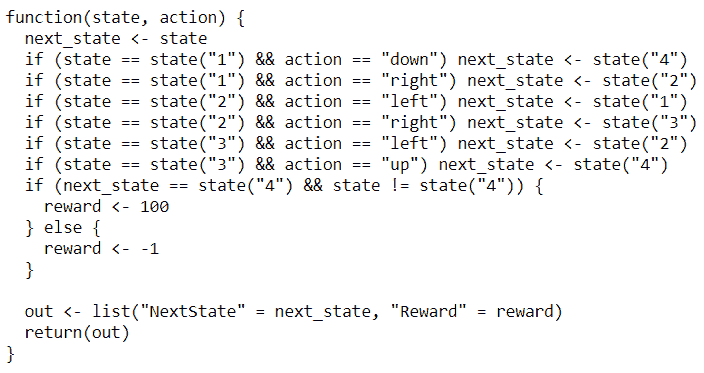
# Let us generate 1000 iterations
sequences <- sampleExperience(N = 1000, env = gridExampleEnvironment, states = states, actions = actions)
head(sequences,6)
下面的屏幕截图显示了示例数据的前几条记录:
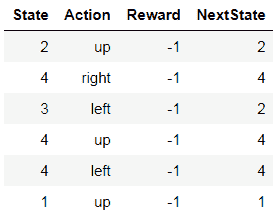
solver_rl <- ReinforcementLearning(sequences, s = "State", a = "Action", r = "Reward", s_new = "NextState")
print(solver_rl)
下面的屏幕截图显示了州行动表，以及针对我们的问题的政策和总体奖励。 X1 、 X2 、 X3 、 X4 分别代表状态1、2、3、4:
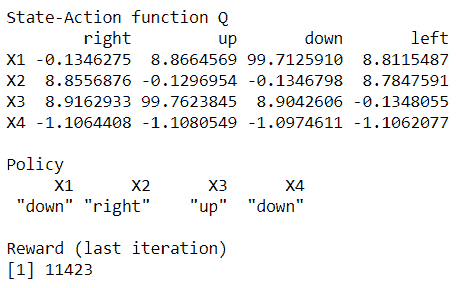
在这里，我们可以看到我们在最后一次迭代中的总回报是11423。
在步骤1 中，我们为这个问题定义了一组可能的状态和动作。为了使用无模型RL，我们需要创建一个模拟环境行为的函数。在步骤2 中，我们通过创建一个名为gridExampleEnvironment()的函数将问题公式化，该函数将一个状态-动作对作为输入，并生成下一个状态和相关奖励的列表。在步骤3 中，我们使用sampleExperience()函数通过查询我们在前面步骤中创建的环境来生成动态状态-动作转换元组。这个函数的输入参数是样本数、环境函数以及状态和动作集。该函数返回一个数据帧，其中包含来自环境的经验观察序列。
一旦生成了观察序列数据，代理就会基于该数据学习最优策略。为了实现这一点，在步骤4 中，我们使用了ReinforcementLearning()功能。我们可以向这个函数传递更多的参数来定制代理的学习行为。
论据如下:
我们看到学习过程的结果包含状态-动作表；即每个状态-动作对的Q值和在每个状态下具有最佳可能动作的最优策略。此外，我们还得到了政策的整体奖励。
要了解更多关于其他RL算法的信息，比如已经在街机学习环境中实现的SARSA和GQ，请访问https://arxiv.org/pdf/1410.8620.pdf。
到目前为止，您应该已经了解了RL的框架。在这个菜谱中，我们将在RL中实现gridworld环境的真实应用。这个问题可以表示为一个4x12大小的网格。剧集从左下方的状态开始，目标状态位于网格的右下方。向左、向右、向上和向下是任何状态下唯一可能的动作。网格下部标记为 C 的状态是悬崖。任何进入这些状态的转变都会招致-100的高负奖励，并使代理立即回到开始状态。对于目标状态， G ，奖励为0，而对于除目标状态和悬崖之外的所有转换，奖励为-1。
下图显示了悬崖行走问题的导航矩阵:
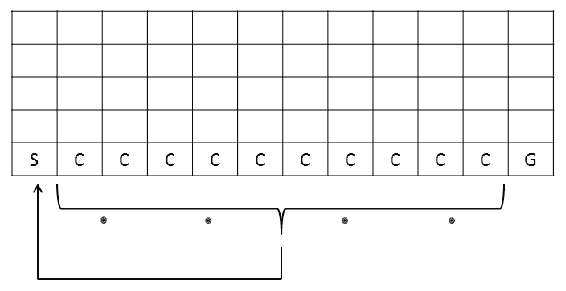
让我们继续使用RL来解决这个导航问题。
在这个菜谱中，我们将使用reinforcelearn包从名为 cliff walking 的内置环境中获取数据。这个环境是从gridworld环境继承来的。
我们将使用ReinforcementLearning包执行无模型RL:
library(reinforcelearn)
library(ReinforcementLearning)
在下一节中，我们将创建一个代表悬崖行走问题的环境。
让我们创造一个环境来代表我们在悬崖上行走的问题:
env = makeEnvironment("cliff.walking")
env
以下截图是对悬崖行走环境的描述:
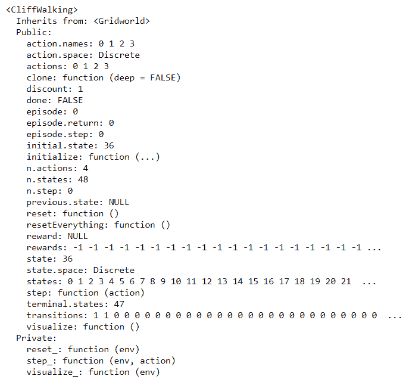
# Creating the function to query the environment
sequences <- function(iter,env){
actions <- env$actions
data <- data.frame(matrix(ncol = 4, nrow = 0))
colnames(data) <- c("State", "Action", "Reward","NextState")
env$reset()
for(i in 1:iter){
current_state <- env$state
current_action <- floor(runif(1,0,4))
current_reward <- env$step(current_action)$reward
next_state_iter <- env$step(current_action)$state
iter_data <- cbind("State" = current_state,"Action" = current_action,"Reward"=current_reward,"NextState" = next_state_iter)
data <- rbind(data,iter_data)
if(env$done == "TRUE"){
break;
}
}
return(data)
}
现在，让我们从前面代码块中定义的函数中获取数据:
iter <- 1000
observations = sequences(iter,env)
cols.name <- c("State","Action","NextState")
observations[cols.name] <- sapply(observations[cols.name],as.character)
sapply(observations, class)
# Displaying first 20 records
head(observations,20)
下面的屏幕截图显示了生成的数据中的一些记录:
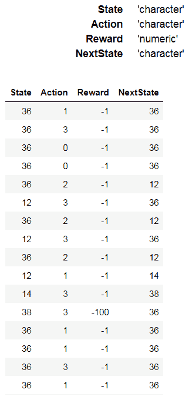
control <- list(alpha = 0.2, gamma = 0.4, epsilon = 0.1)
# Perform RL
model <- ReinforcementLearning(data = observations, s = "State", a = "Action", r = "Reward",
s_new = "NextState", iter = 1, control = control)
现在，我们打印已学习的状态-动作表，它包含每个状态-动作对的Q值:
print(model)
下表显示了每个状态-动作对的Q值表:
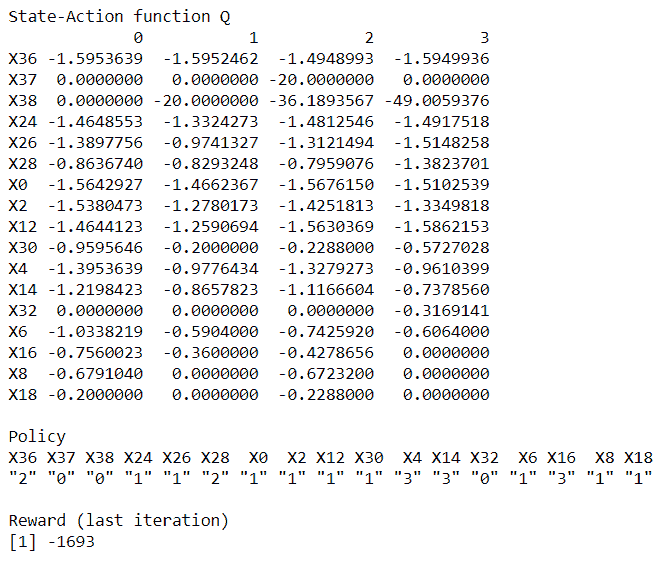
Q值表中给出了最佳策略。
在步骤 1 中，我们使用reinforcelearn库中的makeEnvironment()函数创建了悬崖漫步环境。这种环境属于gridworld阶层。在步骤2 中，我们创建了一个定制的函数来查询悬崖行走环境并获取样本观测数据。env()函数的step()方法将一个动作作为输入参数，并返回一个带有状态、奖励和完成的列表作为输出。一旦生成了观察序列数据，我们就使用ReinforcementLearning()函数让代理在最后一步学习基于该数据的最优策略。
在许多RL问题中，探索制定最优策略的行为可能是昂贵的。体验回放是一种用于让代理重用过去体验的技术。这种技术通过重放已经观察到的状态转换作为环境中的新观察来实现快速收敛。体验重放需要由状态、动作和奖励组成的样本序列作为输入数据。这些转换使代理学习状态-动作函数和输入数据中所有状态的最优策略。这个策略也可以应用于验证目的或者迭代地改进当前策略。要在R中实现体验重放，您需要将现有的RL模型作为参数传递给ReinforcementLearning()函数。
让我们从悬崖行走环境中获取100个新的数据样本:
new_observations = sequences(100,env)
cols.name <- c("State","Action","NextState")
new_observations[cols.name] <- sapply(new_observations[cols.name],as.character)
sapply(new_observations, class)
head(new_observations)
以下截图显示了新观测数据中的一些记录:
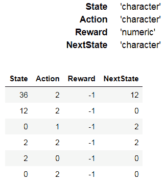
现在，我们提供我们现有的RL模型，这是我们在如何做中创建的...此配方的一部分，作为更新现有策略的一个参数。
下面的屏幕截图显示了在实现体验重放之后，每个状态-动作对的Q值表:
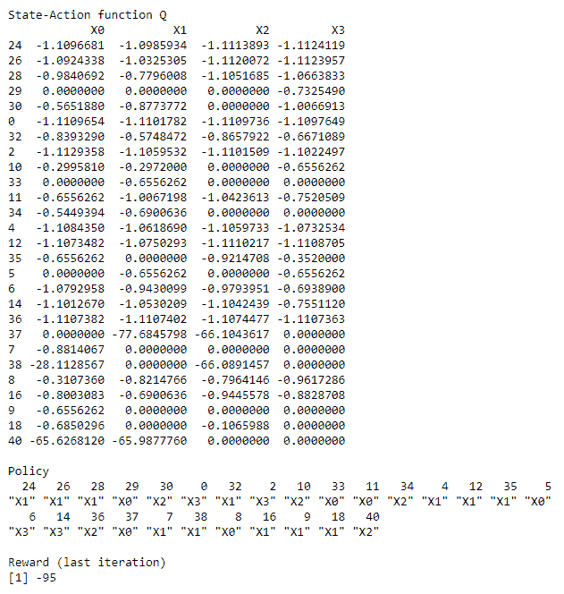
在前面的屏幕截图中，我们可以看到，与之前的策略相比，更新后的策略获得了更高的总体回报。